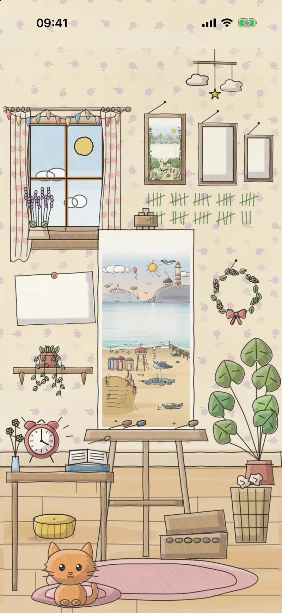
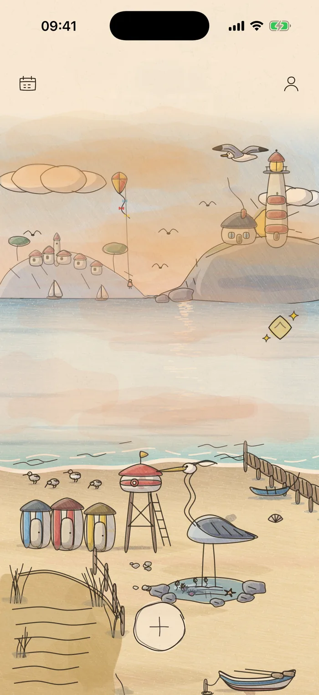
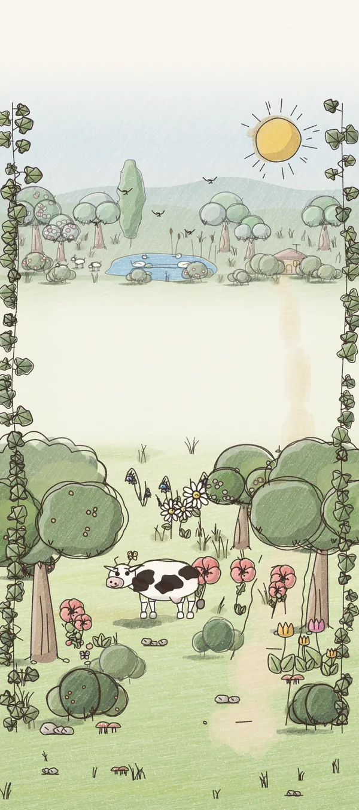

um objetivo por dia.
não uma lista: só um, aquele que você vem adiando há tempo demais.


segure o círculo.
para quem vem adiando há tempo demais.
para quem tem uma lista longa e nunca começa. o 1thing faz você escolher um objetivo só, pequeno, para hoje.
pare de adiar.
um objetivo por dia é pequeno o bastante para começar de verdade.
veja o que você fez.
cada objetivo concluído fica: no quadro, no calendário, na parede do ateliê.
sem culpa.
se você pular um dia, não perde nada. o quadro espera.
um momento seu, todo dia.
um gesto calmo, um desenho que cresce, um companheiro esperando por você.
no seu ateliê mora um companheiro.
ele espera por você lá todo dia, enquanto você pinta.
escolha quem.
o seu ateliê.
o cômodo onde você pinta, todo seu. ele cresce com você: cada objetivo deixa uma marca, cada quadro terminado ganha um lugar na parede.
um risquinho para cada objetivo concluído.
os quadros terminados, pendurados nas paredes.





seu companheiro, esperando por você.
cortinas, plantas, luzinhas, tapetes: mais de 40 coisas para escolher.
decore do seu jeito.
paredes, cortinas, plantas, luzinhas, tapetes: mais de 40 coisas.
como funciona.
escolha um objetivo. só um, para hoje.
é assim que se para de adiar: um pequeno passo de cada vez.
quando concluir, segure o círculo.
até ele se fechar. é o seu sinal de feito.
cada objetivo concluído pinta um pedaço do quadro.
com 30, o quadro fica pronto. se você pular um dia, ele espera.


o quadro muda com o seu dia.
o quadro ganha a luz da hora em que você conclui seu objetivo.
- amanhecer

- dia

- pôr do sol

- noite

cada dia feito fica.
no calendário você encontra os 30 pedaços do quadro. toque em um dia para reler o objetivo, e a nota que deixou.
toque em um dia feito para reler.

por que funciona.
o 1thing se baseia em ideias que a pesquisa estuda há muito tempo.
registrar o progresso ajuda a alcançar objetivos.
uma meta-análise de 138 estudos: quem acompanha o próprio progresso alcança os objetivos com mais frequência, principalmente quando registra.
no 1thing: o quadro e o calendário.
Harkin e colegas, Psychological Bulletin, 2016pequenos avanços contam.
em cerca de 12.000 diários de trabalho, os melhores dias eram os de um pequeno avanço.
no 1thing: um objetivo pequeno, todo dia.
Amabile e Kramer, The Progress Principle, 2011pular um dia não quebra um hábito.
acompanhando 96 pessoas por 12 semanas, perder uma oportunidade não mudou de forma perceptível a formação do hábito.
no 1thing: se você pular um dia, o quadro espera.
Lally e colegas, European Journal of Social Psychology, 2010se perdoar ajuda a adiar menos.
os estudantes que se perdoaram por adiar o estudo para uma prova adiaram menos para a prova seguinte.
no 1thing: sem culpa, sem sequência para perder.
Wohl, Pychyl e Bennett, Personality and Individual Differences, 2010
são estudos sobre as ideias em que o app se baseia, não sobre o 1thing.
e todo dia, uma ajuda.
-
nos dias vazios, eu encontro o objetivo certo para você.
sei o que importa para você: eu sugiro, você escolhe.
-
ícone e widgets do seu jeito.
oito ícones, e seu objetivo na tela de início, dentro do quadro.
-
um lembrete por dia.
na hora que você escolher, no tom que preferir.


o que vamos pintar agora?
quando um quadro fica pronto, eu o penduro no seu ateliê e começa outro.




um objetivo por dia.
para iPhone.